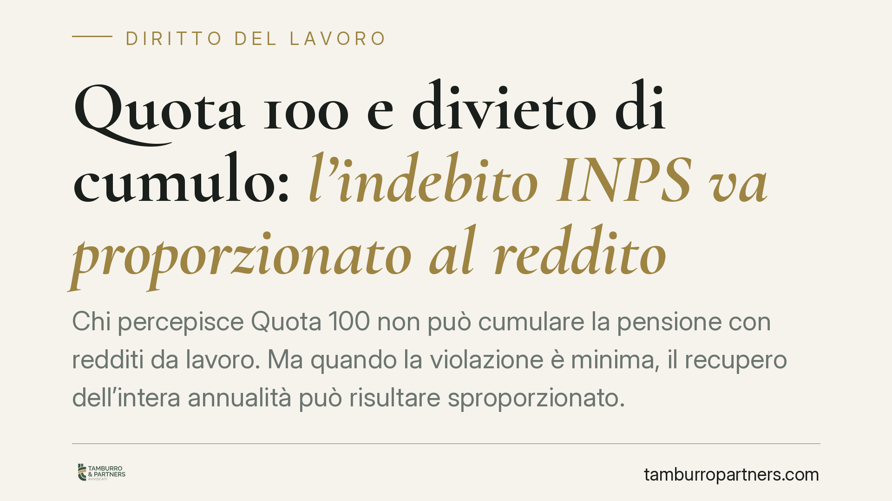

Quota 100 e divieto di cumulo: l'indebito INPS va proporzionato al reddito
Chi percepisce Quota 100 non può cumulare la pensione con redditi da lavoro. Ma quando la violazione è minima, il recupero dell'intera annualità può risultare sproporzionato. Si va affermando un orientamento che impone all'INPS di parametrare la pretesa al reddito effettivo. Analizziamo il quadro normativo, i rischi e le mosse difensive per il pensionato coinvolto.

Il caso
Una pensionata in Quota 100 percepisce un reddito da lavoro di modesta entità. L'INPS, rilevata la violazione del divieto di cumulo, le chiede la restituzione di circa 11.000 euro, pari a un'intera annualità di trattamento. Il contrasto è evidente: a fronte di un reddito di poche centinaia di euro, la pretesa dell'ente supera di molte volte la somma percepita in più.
La vicenda, passata per il Tribunale e la Corte d'Appello di Milano, riporta all'attenzione un tema ricorrente: il rapporto tra la rigidità del divieto di cumulo e il principio di proporzionalità.
Inquadramento normativo
La disciplina di riferimento è l'art. 14, comma 3, del D.L. n. 4/2019 (convertito dalla L. n. 26/2019). La norma stabilisce che la pensione Quota 100 non è cumulabile con redditi da lavoro, dipendente o autonomo, percepiti nel periodo intercorrente tra la decorrenza del trattamento e il compimento dell'età per la pensione di vecchiaia.
La stessa disposizione prevede un'unica eccezione: sono ammessi i redditi da lavoro autonomo occasionale, entro il limite di 5.000 euro lordi annui. L'eccezione riguarda questa sola categoria: non copre, quindi, ogni reddito entro quella soglia, ma specificamente il lavoro autonomo occasionale.
Occorre tenere distinti tre piani, spesso confusi:
- Incompatibilità e sospensione: in presenza di redditi non ammessi, il trattamento è incompatibile e l'erogazione va sospesa per l'anno in cui si verifica il cumulo;
- Recupero dell'indebito: ciò che l'INPS ha già versato in costanza di incompatibilità diventa indebito pensionistico, soggetto a recupero;
- Principio di proporzionalità: criterio che incide sul *quantum* del recupero, non sull'esistenza del divieto.
Sono conseguenze diverse. La sospensione attiene all'erogazione; il recupero attiene alle somme già percepite; la proporzionalità è un principio di misura.
L'orientamento emergente
Si va affermando in giurisprudenza una lettura che incide sul terzo piano. Secondo questo indirizzo, quando la violazione del divieto è di entità minima, il recupero dell'intera annualità produce un effetto sanzionatorio sproporzionato rispetto al beneficio effettivamente conseguito dal pensionato.
La conseguenza pratica è che l'INPS non potrebbe recuperare automaticamente l'intera mensilità o annualità, ma una somma parametrata al reddito realmente percepito in violazione del divieto.
Due precisazioni sono doverose.
La prima: questo orientamento non legittima il cumulo. Il divieto resta pieno, e la percezione di redditi non ammessi integra sempre una violazione. Ciò che si discute è soltanto la misura del recupero.
La seconda: finché non si consolida in modo stabile, un indirizzo giurisprudenziale non equivale a una modifica normativa. Vincola il singolo giudizio in cui è affermato, ma non muta il testo dell'art. 14, c. 3. Prudenza impone di non trattarlo come regola acquisita.
Implicazioni pratiche
Per il pensionato Quota 100 che abbia percepito redditi da lavoro, il dato rilevante è questo: ricevere una richiesta di restituzione per l'intera annualità non significa necessariamente doverla pagare per intero.
Se la pretesa è manifestamente sproporzionata rispetto al reddito effettivo, esiste uno spazio di contestazione sul *quantum*. Resta ferma, però, la responsabilità per la violazione in sé: non è una via per sanare a posteriori un cumulo vietato.
Attenzione anche ai termini. L'atto di recupero dell'indebito pensionistico va impugnato nei termini e con le forme previste per l'opposizione agli atti INPS: lasciarli decorrere preclude la contestazione, anche quando la pretesa è fondata solo in parte.
Cosa fare in concreto
- Verifica la natura del reddito: controlla se rientra nel lavoro autonomo occasionale entro i 5.000 euro lordi annui, unica ipotesi ammessa dalla norma.
- Quantifica lo scostamento: metti a confronto il reddito effettivamente percepito con l'importo che l'INPS pretende di recuperare, per misurare l'eventuale sproporzione.
- Non ignorare la richiesta: annota la data di notifica e individua subito il termine per proporre opposizione, evitando decadenze.
- Raccogli la documentazione: CU, fatture, contratti e prospetti reddituali servono a ricostruire l'entità reale del cumulo.
- Fatti assistere prima di pagare o firmare piani di rientro: una valutazione preventiva consente di contestare il *quantum* senza pregiudicare la posizione.
Consigliamo, in ogni caso, di non aderire a rimborsi rateali prima di aver verificato la correttezza dell'importo richiesto.
Ogni storia di lavoro ha i suoi tempi.
Se gestisci HR e vuoi un confronto su contenzioso, ispezioni o licenziamenti, scrivi allo studio. Ti rispondiamo entro un giorno lavorativo.